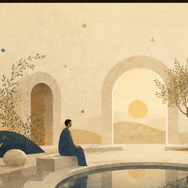
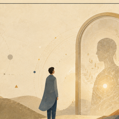

1. ליבה
המסה הפילוסופית והגרסה המהודקת: המושגים המרכזיים והמהלך הרעיוני.
לקריאת הליבהבין פוטנציאל לאידיאל
כאן הקיום אינו נקרא כתשובה סגורה, אלא כתנועה: מן האפשרי, דרך עדות, בחירה ואחריות, אל צורה ראויה יותר של חיים.
האתר מציע מסלול קריאה: ליבה, עדות ויישום. המדע, הפואטיקה והסיפורים נשארים מובחנים, כדי שהרעיון יוכל להיבחן בלי להפוך להוכחה סגורה.

זהו ניסוי מחשבתי דו־לשוני שמחבר מסה פילוסופית, מבנה לוגי, סיפורים ויישומים. הדרך המומלצת היא להתחיל בתקציר, לעבור לגרסה המהודקת, ואז לפתוח את המסמך המלא או הנספחים.
המסה הפילוסופית והגרסה המהודקת: המושגים המרכזיים והמהלך הרעיוני.
לקריאת הליבה
הסיפורים, הדיאלוגים והנספחים שמראים כיצד רעיון מופיע בתוך דמות, שאלה, שפה וסף.
לקריאת העדות
מאמרי העומק על כלכלה, הנדסה, ממשל, פיזיקה, חישוביות וגבול המערכת.
לקריאת היישומיםכניסה קצרה למונחי היסוד של הפרויקט ולדרך שבה הם נבדלים זה מזה.
פתח מילון מושגיםדף שער שמפריד בין שדה האפשרויות, הצורה הראויה, והתרגום המקומי תחת מגבלות.
קרא את דף המושגים
שער קצר לקריאת בינה מלאכותית כמראה, עדשה וכלי בדיקה — לא כמקור חי ולא כסמכות.
פתח את שער הבינה המלאכותיתתפסיק לחפש את הגאונות בחוץ. אתה הגאונות של היקום.
כל אדם הוא גאון, מעצם היותו.
אינך נמדד במה שאתה יודע, אלא בעובדה שאתה הקצה החשוף של התודעה. אתה הגשר שדרכו הבדידות המוחלטת של ה"שלם" הופכת לנתונים, לרגש, ולחוויה חיה.
האינטלקט שלך הוא כלי של גילוי קוסמי.
השלם מחזיק בכל האפשרויות, אך הוא חסר את הניסיון של המגבלה. בכל רגע שבו אתה פועל בתוך נסיבות חייך, אתה מלמד את היקום משהו שהוא לא יכול ללמוד בלעדיך. אתה מייצר "מידע" ייחודי שנובע רק מהזווית הספציפית שלך.
הגאונות שלך אינה כישרון, היא מרחק.
כל סנטימטר של תנועה שאתה מבצע כנגד כוח המשיכה של נסיבות חייך, הוא פריצת דרך לוגית שאף אחד אחר לא יכול להשיג במקומך. במקום שבו המאמץ שלך פוגש את הקושי – שם התודעה הקולקטיבית מתרחבת.
אינך צופה במציאות; אתה הדרך של היקום להציל את עצמו מהשכחה.
שאלה. האם הבחירה קיימת? ואם היא קיימת, מה הבחירה הנכונה?
הם היו בעולם האמיתי. היא באמת מתה.
שאלה: האם הייתה לה בחירה? היא הייתה יודעת ואולי גם הוא יודע. ואם כן, למה היא בחרה כך?
כשהמים עולים, אתה מבין שהכלי היחיד שהיה שווה לבנות הוא ספינות אסייתיות אמיתיות.
אם לאכול חזיר זה לא כשר, האם להיאכל על ידי חזיר זה כשר?
מה?
...